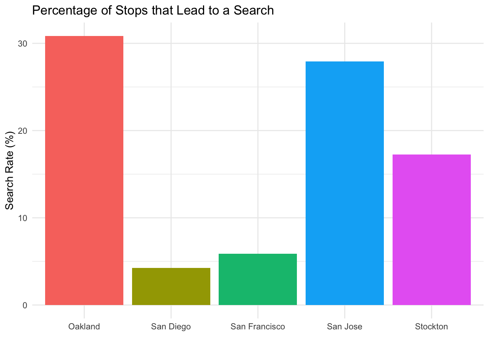
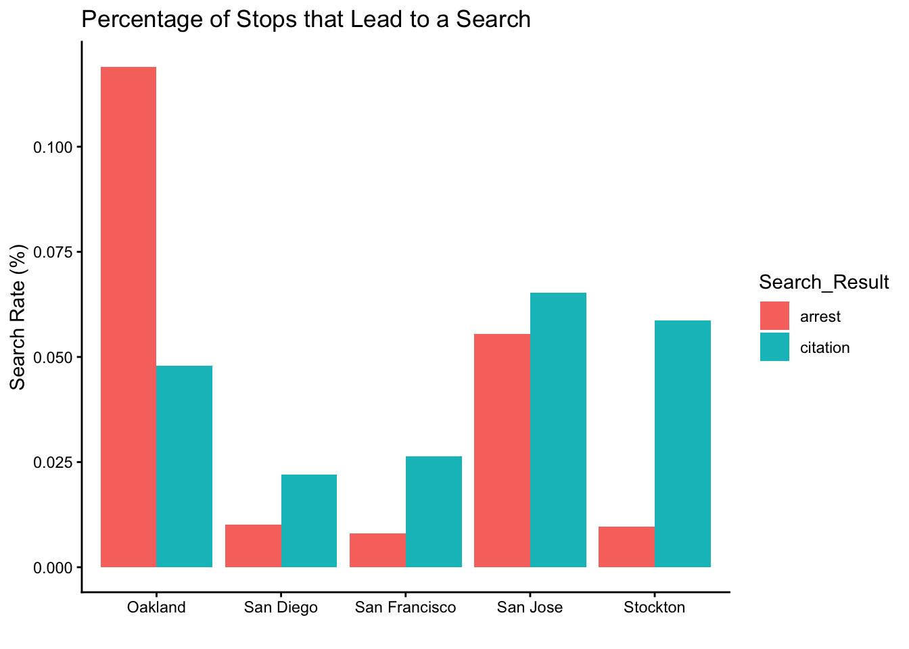

The Stanford Open Policing Project compiled a database of nearly 100 million traffic stops conducted across the United States during the 2010s.1 This analysis focuses on data from several cities in California to explore how different cities experience policing.
A note: understanding policing goes far beyond statistics. Community trust, relationships, and historical context are critical to evaluating policing, yet difficult to quantify. The following analysis is therefore descriptive and not meant to be exhaustive.
In particular, I’d like to think about how traffic stops escalate. First, among the cities with available data, how many traffic stops lead to a search? Feel free to check out the code below:
Code
SELECT'Oakland'AS PoliceDepartment,COUNT(*) AS numStops,SUM(search_conducted) AS numSearches,AVG(search_conducted) AS pctSearches,-- The following line is not efficient, but added to do as much data wrangling in SQL per assignmentCOUNT(*) / (440983*4) AS searchesByPopFROM ca_oakland_2020_04_01UNIONSELECT'San Diego'AS PoliceDepartment,COUNT(*) AS numStops,SUM(search_conducted) AS numSearches,AVG(search_conducted) AS pctSearches,COUNT(*) / (1386932*4) AS searchesByPopFROM ca_san_diego_2020_04_01UNIONSELECT'San Francisco'AS PoliceDepartment,COUNT(*) AS numStops,SUM(search_conducted) AS numSearches,AVG(search_conducted) AS pctSearches,COUNT(*) / (827526*10) AS searchesByPopFROM ca_san_francisco_2020_04_01UNIONSELECT'San Jose'AS PoliceDepartment,COUNT(*) AS numStops,SUM(search_conducted) AS numSearches,AVG(search_conducted) AS pctSearches,COUNT(*) / (997368*5) AS searchesByPopFROM ca_san_jose_2020_04_01UNIONSELECT'Stockton'AS PoliceDepartment,COUNT(*) AS numStops,SUM(search_conducted) AS numSearches,AVG(search_conducted) AS pctSearches,COUNT(*) / (324975*5) AS searchesByPopFROM ca_stockton_2020_04_01;
Police_Department
Number_of_Stops
Number_of_Searches
Percentage_of_Searches
Stops_by_Population (%)
Oakland
133407
41157
30.850705
7.56
San Diego
383027
16288
4.252442
6.90
San Francisco
905070
53381
5.897997
10.94
San Jose
152834
41710
27.943403
3.06
Stockton
41629
7178
17.242787
2.56
Two variables slow immediate interpretation. One, available data exists for varying amounts of time. For example, policing data for San Francisco is available for ten years, whereas data for San Diego is available for only four. Second, the sizes of the cities considered vary significantly: Stockton is more than one million less residents than San Francisco. To understand the stops and searches in the context of the data and city, Stops_by_Population is a rough estimate: the number of stops are divided by the population of the city multiplied by the duration of years. Population estimates is based on 2025 census data.2
There are differences in both how many stops a police department makes and how often those stops lead to vehicle searches. San Jose, for example, makes relatively little stops, but a high number of them lead to searches. Oakland ranks highly in both categories.

Code
#WHERE does notwork inside SUM, instead this new syntax: CASEWHEN, THEN, ELSE, ENDSELECT'Oakland'AS PoliceDepartment,SUM(CASEWHEN search_conducted =1AND citation_issued =1THEN1ELSE0END) AS searchToCitation,SUM(CASEWHEN search_conducted =1AND arrest_made =1THEN1ELSE0END) AS searchToArrest,AVG(CASEWHEN search_conducted =1AND citation_issued =1THEN1ELSE0END) AS searchToCitationPercent,AVG(CASEWHEN search_conducted =1AND arrest_made =1THEN1ELSE0END) AS searchToArrestPercentFROM ca_oakland_2020_04_01UNIONSELECT'San Diego'AS PoliceDepartment,SUM(CASEWHEN search_conducted =1AND citation_issued =1THEN1ELSE0END) AS searchToCitation,SUM(CASEWHEN search_conducted =1AND arrest_made =1THEN1ELSE0END) AS searchToArrest,AVG(CASEWHEN search_conducted =1AND citation_issued =1THEN1ELSE0END) AS searchToCitationPercent,AVG(CASEWHEN search_conducted =1AND arrest_made =1THEN1ELSE0END) AS searchToArrestPercentFROM ca_san_diego_2020_04_01UNIONSELECT'San Francisco'AS PoliceDepartment,SUM(CASEWHEN search_conducted =1AND citation_issued =1THEN1ELSE0END) AS searchToCitation,SUM(CASEWHEN search_conducted =1AND arrest_made =1THEN1ELSE0END) AS searchToArrest,AVG(CASEWHEN search_conducted =1AND citation_issued =1THEN1ELSE0END) AS searchToCitationPercent,AVG(CASEWHEN search_conducted =1AND arrest_made =1THEN1ELSE0END) AS searchToArrestPercentFROM ca_san_francisco_2020_04_01UNIONSELECT'San Jose'AS PoliceDepartment,SUM(CASEWHEN search_conducted =1AND citation_issued =1THEN1ELSE0END) AS searchToCitation,SUM(CASEWHEN search_conducted =1AND arrest_made =1THEN1ELSE0END) AS searchToArrest,AVG(CASEWHEN search_conducted =1AND citation_issued =1THEN1ELSE0END) AS searchToCitationPercent,AVG(CASEWHEN search_conducted =1AND arrest_made =1THEN1ELSE0END) AS searchToArrestPercentFROM ca_san_jose_2020_04_01UNIONSELECT'Stockton'AS PoliceDepartment,SUM(CASEWHEN search_conducted =1AND citation_issued =1THEN1ELSE0END) AS searchToCitation,SUM(CASEWHEN search_conducted =1AND arrest_made =1THEN1ELSE0END) AS searchToArrest,AVG(CASEWHEN search_conducted =1AND citation_issued =1THEN1ELSE0END) AS searchToCitationPercent,AVG(CASEWHEN search_conducted =1AND arrest_made =1THEN1ELSE0END) AS searchToArrestPercentFROM ca_stockton_2020_04_01;
Let’s dig deeper, how many of these searches find something? How many lead to citations? How many lead to arrests?
Police_Department
Search that Leads to Citation
Search that Leads to Arrest
Search to Citation (%)
Search to Arrest (%)
Oakland
6396
15870
4.79
11.90
San Diego
8452
3898
2.21
1.02
San Francisco
23820
7198
2.63
0.80
San Jose
9987
8465
6.53
5.54
Stockton
2444
400
5.87
0.96
Oakland leads both escalatory categories: the highest percentage of stops that lead to searches and searches that lead to arrests. Further, Oakland is the only police department measured where more stops lead to arrests than citations.
Code
library(tidyverse)temp_output2 |>rename(citation = searchToCitationPercent,arrest = searchToArrestPercent ) |>#Wow, I new pivots would come in handy!pivot_longer(cols =c(citation, arrest),names_to ="Search_Result",values_to ="resultPercent" ) |>ggplot(aes(x = PoliceDepartment, y = resultPercent, fill = Search_Result)) +#Dodge staggers the percentsgeom_col(position="dodge") +labs(title ="Percentage of Stops that Lead to a Search",x ="",y ="Search Rate (%)") +theme_classic()

These results show interesting variation across police departments in stops, searches, and arrest rates. Importantly, however, these statistics cannot explain if these stops were fair, if searches had probable cause, or what, if anything, was found.
Code
DBI::dbDisconnect(con_traffic)
Footnotes
Pierson, Emma, Camelia Simoiu, Jan Overgoor, Sam Corbett-Davies, Daniel Jenson, Amy Shoemaker, Vignesh Ramachandran, et al. 2020. “A Large-Scale Analysis of Racial Disparities in Police Stops Across the United States.” Nature Human Behaviour, 1–10.↩︎